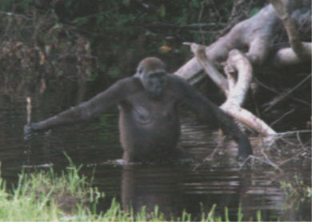

| Evolution in the News - October 2005 |
| by S. Chandler |
Humans aren't the only ones who use tools.
|
The October 8 issue of New Scientist shows a picture of a gorilla using a stick as a depth gauge.
|
 |
There was a big buzz in the media last December about capuchin monkeys (cebus libidinosus) using tools in the wild. A team of researchers, led by University of Georgia psychologist Dorothy Fragaszy, found the monkeys, when pressed because of a lack of food, resort to using rocks (or, as they call them, tools) to crack open nuts. Of course, apes and monkeys have been shown (by humans) in captivity how to use tools, but according to the researchers, this was the "first direct scientific report of tool use among a population of wild capuchin monkeys." 2. At that time, other than chimpanzees, capuchin monkeys were the only other primate species observed using tools in the wild. It was such exciting news that it was reported by several different media sources. (American Journal of Primatology 3, Science 4, MSNBC 5, BBC 6, CBC 7, ABC News 8, etc).
Scientists have historically considered use of tools to be a distinctly human characteristic. If primate fossils were found in association with primitive tools, it was a slam-dunk that the fossils were human. Last year, the tiny Homo florensis was found near tools. The tools were unquestionably considered to be of human origin. The only argument was whether or not they were made by Homo florensis or by modern humans.
The idea that only humans would use tools is rooted in the evolutionary bias that only the most highly evolved creatures (that is, humans) are smart enough to use tools. That evolutionary prejudice has hindered scientific progress. Legitimate discoveries of animals using tools have been met with skepticism and criticism. But the stranglehold evolution has had on the scientific community is beginning to weaken, and scientific progress in understanding animal behavior is slowly being made. Local residents have been observing capuchin monkeys using tools for over 30 years. Evolutionary scientists are just now starting to notice it.
Of course there is a difference between using tools and actually making tools. Apes have not been observed making tools in the wild. They use sticks or stones they pick up without shaping them. They may use some judgment about which sticks or stones to use, but no manufacturing is involved.
Bird nests and beaver dams aren't "tools" in the usual sense, but are intentionally constructed by "dumb" animals for a specific purpose. Furthermore, they aren't examples of "monkey see, monkey do." So, these animals seem to know (independent of a human example) how to construct or build the things they need or use for a purpose.
It is hard to imagine what tools monkeys really need. Beavers need dams, so they build them. Birds need nests, so they build them. Rocks do an adequate job cracking open nuts, so monkeys don't need to make nutcrackers. They simply use the tools at hand.
Evolutionists typically believe tool usage and manufacture was a critical part of the human evolutionary development process. According to PBS:
|
Whenever and among whomever toolmaking arose, it came long after the transition from a tree-based locomotion style to the upright-walking stance that freed the hands, which took place at least 4 million years ago and possibly as far back as 6 million years ago. It took considerable change in the hands and fingers to create the deft manipulative abilities of the Homo species. Major changes show up in the fossil record of the species known as Homo habilis, or "handy man." These individuals had a mobile thumb joint, powerful muscles to bend the fingers, and large fingertips -- all adaptations that may have made possible the making and use of stone tools, and came just as the human brain was expanding and undergoing reorganization. Once tool manufacture and use became an essential component of the human lifestyle, affecting the amount and quality of food an individual could obtain, tool use may have driven the further evolution of the human hand. Individuals whose hands happened to be better adapted for tool use would tend to be better nourished and to successfully raise more children, who in turn would be likely to inherit their parents' hand morphology. Thus our ancestors' manipulative abilities increased, until the modern human capacities of grasping and manipulating, which allow us to throw a curve ball or play a symphony, were much as they are today." 9 |
What evidence is there that people's ability to use tools "...came long after the transition from a tree-based locomotion style to the upright-walking stance"? Chimpanzees and capuchin monkeys are not bipedal, yet they clearly have the capacity for using tools. Additionally, when apes or monkey's sit down, their hands are "free". Locomotion hardly seems a requirement for tool making or usage. The next statement is equally perplexing. "It took considerable change in the hands and fingers to create the deft manipulative abilities of the Homo species." This was possibly observed because earlier in their evolutionary tool explanation, PBS stated: "Part of the problem is that chimpanzee hands are not well adapted to such delicate work". 10
Certainly, PBS feels people's extraordinary ability to craft and use tools was a slow, gradual result of nature's cruel game. Apparently, we happened to develop better shaped hands for making and using tools, and then nature selected this shape. While it is morphologically true our hand structure is highly specific, it is certainly not a requirement for making and using tools.
Hands are better suited for holding paintbrushes than mouths are, but well-known artist Joni Eareckson Tada 11 paints using her mouth. Furthermore, "Barb Guerra doesn't have any arms or hands. She does everything with her feet. Most people don't consider feet a precision instrument. Despite this, Barb has no problem cooking, cleaning, driving, putting on make-up, playing piano and taking care of her son. She does everything with her feet!" 12 Some people with debilitating diseases such as polio have hands that are completely contorted. Despite this physical challenge, they can still build and make just about anything with amazing results--sometimes better than people without debilitating physical challenges.
It seems human ingenuity and ability extends far beyond the capacity of physical limitation or challenge. To make matters worse for evolutionists, it turns out primates are not the only creatures adapt to using tools. Most people know sea otters use tools to get to their food. They often use rocks or even shellfish. Yet, even without an opposable thumb or specialized hands like humans, sea otters manage pretty well with tools for this task--perhaps better than most people can do with the same tool.
According to a BBC science article written a few years ago, "The crow is putting our closest cousins to shame." 13 Professor Kacelnik of Oxford University, who studies crows (corvus moneduloides) has observed "Experiments show the humble bird is better than the chimp at toolmaking." 14 Professor Kacelnik continues,
|
It is not only cleverer than we think in this particular direction but probably, at least in relation to tools, has a higher level of understanding than chimpanzees, ... Experiments with primates, who are much closer relatives of humans than birds, have failed to show any deliberate, specific tool making. ... It is the first time any animal has been found to make a new tool for a specific task. 15 |
The Behavioral Ecology Group has also made the following comments about their observation of crows making and using tools:
|
In the wild, the crows make a wide variety of tools from a number of different materials, and we have found that they will also readily do so in captivity, even with unfamiliar materials. They usually remove the leaves and side branches from twigs, and also make tools from other bits of material they find, such as their own molted feathers (by removing the barbs), cardboard (by tearing it into strips), and leaves. They are even able to use techniques which would not work with natural materials to manufacture a tool for a particular task. 16 |
The researchers even put a video on the Internet showing a crow devising a tool from natural materials.
According to a different scientific study on crows, BBC reports on a study conducted by Dr. Gravin Hunt:
|
New Caledonian crows have been seen to make at least two sorts of hook tools in the wild. Gavin Hunt of the University of Auckland, New Zealand, has studied them. He said the behavior of the young female crow was very interesting but not that surprising. It is tempting to say that the bird used some kind of insight to access and solve the problem of extracting the food, as humans often do in their tool making ... the birds' tool making is quite skilful. It's quite a fine manipulation to cut and rip the shapes out of the leaves ... It's a unique system that any animal fashions tools to this extent. Even chimpanzees don't. ... He and his colleagues describe in the journal Nature how they collected the remains of leaves cut up by Corvus moneduloides, a crow species from the French overseas territory of New Caledonia in the southwestern Pacific Ocean. The scientists worked out from the leaves' shape and structure how they must have been used. 17 |
Evolutionary bias has long fostered the idea that since apes are our closest evolutionary relative, they must be second smartest. For a long time, we have been led to believe only humans and apes have evolved enough to use tools. Recent objective observations by scientists have clearly demonstrated this isn't true. Again, the theory of evolution has led scientists down the wrong path.
| Quick links to | |
|---|---|
| Science Against Evolution Home Page |
Back issues of Disclosure (our newsletter) |
| Web Site of the Month |
Topical Index |
Footnotes:
1
New Scientist, 8 October 2005, "Gorilla uses tool to plumb the depths of abstract thinking", page 20, https://www.newscientist.com/article/mg18825204-300-gorilla-uses-tool-to-plumb-the-depths/
(Ev+)
2
http://www.uga.edu/news/artman/publish/ 041214fragzy.shtml
(Ev)
3
American Journal of Primatology 64:359-366 (2004)
(Ev)
4
http://apnews.myway.com/article/20041210/ D86SGH580.html
(Ev)
5
http://www.msnbc.msn.com/id/6689205/
(Ev)
6
http://news.bbc.co.uk/1/hi/sci/tech/4083517.stm
(Ev)
7
http://www.cbc.ca/story/science/national/2004/ 12/10/capuchin-tools041210.html
(Ev)
8
http://abcnews.go.com/Technology/ wireStory?id=317974
(Ev)
9
http://www.pbs.org/wgbh/evolution/library/ 07/4/l_074_01.html
(Ev+)
10
http://www.pbs.org/wgbh/evolution/library/ 07/4/l_074_01.html
(Ev+)
11
http://www.joniandfriends.org/
(Cr)
12
http://www.sonypictures.com/tv/shows/ripleys/ database/ep_209a.html
13
http://news.bbc.co.uk/1/hi/sci/tech/2178920.stm
(Ev)
14
http://news.bbc.co.uk/1/hi/sci/tech/2178920.stm
(Ev)
15
http://news.bbc.co.uk/1/hi/sci/tech/2178920.stm
(Ev)
16
http://users.ox.ac.uk/~kgroup/tools/tools_main.html
(Ev)
17
http://news.bbc.co.uk/1/hi/sci/tech/1706437.stm
(Ev)